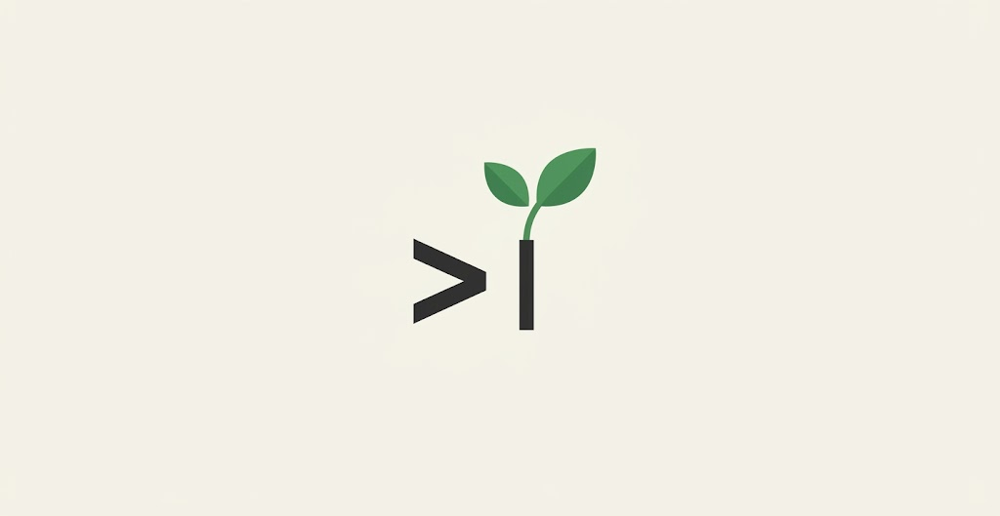

🌱 Green Claude, un skill IA éco-conçu
Un skill pour Claude Code qui guide Claude vers un code éco-conçu selon le RGESN 2024 et le GR491, installé une fois et appliqué automatiquement.
Coder avec un agent IA a un coût énergétique, pendant la session et dans le code qu'il produit. Le RGESN 2024 en fait une famille à part entière (« Algorithmie, dont IA ») : justifier le recours à l'IA, dimensionner le modèle à la tâche, mesurer son impact. Green Claude relie cette exigence de sobriété numérique à l'usage quotidien d'un assistant de code IA générative, plutôt que de traiter les deux sujets séparément.
Ce que le skill fait pour toi
Pendant que Claude code
35 règles d'éco-conception alignées sur les 9 familles du RGESN 2024, avec renvoi aux critères officiels : Claude les applique de lui-même en écrivant du code, sans qu'on le lui demande à chaque fois.
Sur demande, un audit
« Audit éco-conception de ce fichier » lance un script déterministe (grep sur les règles), zéro coût de raisonnement, qui détecte les motifs contraires à l'éco-conception (SELECT *, bibliothèques lourdes, autoplay…).
En 30 secondes
git clone https://github.com/Institut-du-Numerique-Responsable/green-claude.git
cd green-claude && ./install.shLe skill s'installe dans ~/.claude/skills/green-claude et se charge automatiquement dans les sessions Claude Code suivantes. Rien à taper ensuite. Tape /green-claude pour voir la checklist complète.
Ce que contient le projet
- Un skill Claude Code qui s'invoque tout seul dès qu'il s'agit d'écrire ou de revoir du code.
- 35 règles d'éco-conception couvrant les 9 familles du RGESN 2024, dont l'Algorithmie et l'IA frugale, reliées au GR491.
- 14 pratiques de sobriété inspirées de Boris Cherny, le créateur de Claude Code : chacune est sourcée et expliquée.
- Un hook optionnel pour le cache local des réponses et un avertissement aux heures de pointe, proposé à l'installation, jamais imposé.
Pourquoi c'est important
Le code généré par l'IA va tourner pendant des années chez des utilisateurs qu'on ne verra jamais. C'est là que se joue l'essentiel de l'empreinte du « coder avec l'IA », pas pendant la session de génération. Green Claude s'attaque à ce moment précis, en s'appuyant sur des référentiels publics français et internationaux plutôt que sur des règles maison.